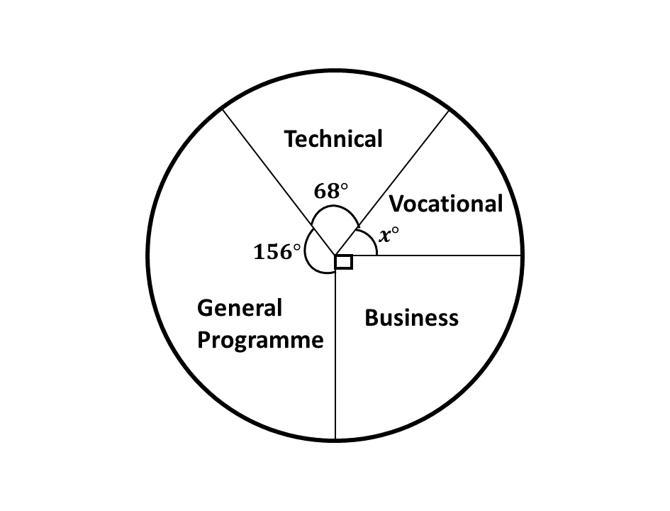
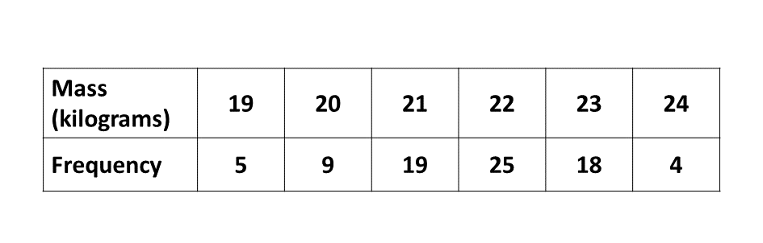

BECE
Year to Practice:
1990
1991
1992
1993
1994
1995
1996
1997
1998
1999
2000
2001
2002A
2002B
2003
2004
2005
2006
2007
2008
2009
2010
2011
2012
2013
2014
2015
2016
2017
2018
2019
2020
2021
2022
2023
2024
PAST QUESTIONS 1998
Time yourself to improve on your speed. You are to use not more than 60 minutes for this section.
Click on the link below when your are ready.
Kindly contact the administrator of the site on WhatsApp or Phone (0208711375) for the link to the test.
Try the questions first, using not more than 15 minutes for each question, and watch the accompanying videos to see how the questions are solved.
Question 1
\(a)\) Simplify the expression
\(\hspace{0.5cm}\) \(3x^2 + 6xy - 3y^2 + 4x^2 - 8xy + 2y^2\)
\(b)\) \(i)\) Solve the inequality \(3x - 9 \geq 12(x - 3)\).
\(\hspace{0.7cm}ii)\) Illustrate your answer on the number line.
\(c)\) If \(p = 7, a = 16, b = 4\) and \(c = 3\),
\(\hspace{0.5cm}\) evaluate \(p^2 - \frac{(a - b)}{c}\)
Question 2
\(a)\) Using a pair of compasses only;
\(\hspace{0.5cm}i)\) Construct a triangle \(PQR\) such that \(|PQ| = 8\) cm, \(\angle RPQ = 90^\circ\) and \(\angle PQR = 30^\circ\). Measure \(|RQ|\)
\(\hspace{0.5cm}ii)\) Construct the perpendicular bisector (mediator) of \(RQ\). Let it meet \(RQ\) at \(O\).
\(b)\) With \(O\) as center and radius \(OP\), draw a circle. Measure \(|OP|\).
\(c)\) What is the special name for the chord \(RQ\)?
Question 3
\(a)\) A farmer travelled from Bakwa to Pabam, the distance between the two towns is 51 km. At Pabam he covered an additional 40 km on official duties. He returned to Bakwa the next day.
\(\hspace{0.5cm}i)\) Find the total distance covered by the man.
\(\hspace{0.5cm}ii)\) If the car used one litre of petrol to cover 20 km, find the amount of petrol used for the whole journey.
\(\hspace{0.5cm}iii)\) If a litre of petrol cost ₵522.00, calculate the total cost of petrol used for the journey.
\(b)\) A woman sold an article for ₵200,000.00 and made a profit of 25%. Find the cost price of the article.
Question 4
\(a)\) The pie chart shows angles representing the number of candidates who applied for admission into four programmes at a Senior Secondary School. The number of pupils who applied were 1080. Find
\(\hspace{0.5cm} i)\) the angle \(x^\circ\) representing the Vocational Programme.
\(\hspace{0.5cm} ii)\) the number of candidates who applied for Business Programme.
\(\hspace{0.5cm} iii)\) correct to the nearest whole number, the percentage of the number of applicants who applied for General Programme.
\(b)\) The table below shows the distribution of the masses of pupils in a school. On a graph paper, draw a bar chart for the distribution.
Question 5
\(a)\) Using a scale of 2 cm to 2 units on both axes, draw two perpendicular axes \(OX\) and \(OY\) on a graph sheet. On the same sheet, mark the \(x-\)axis from \(-8\) to \(8\) and the \(y-\)axis from \(-8\) to \(8\).
\(\hspace{0.5cm} i)\) Plot \(P(-2, 3)\) and \(Q(6, 4)\). Join \(PQ\).
\(\hspace{0.5cm} ii)\) Draw the image \(P_1Q_1\) of \(PQ\) under the anticlockwise rotation through \(90^\circ\) about the origin where \(P \rightarrow P_1\) and \(Q \rightarrow Q_1\)
\(\hspace{0.5cm} iii)\) Draw the image \(P_2Q_2\) of \(PQ\) under a clockwise rotation through \(90^\circ\) about the origin where \(P \rightarrow P_2\) and \(Q \rightarrow Q_2\).
\(b)\) The base radius of a closed cylinder is 4 cm and height of 7 cm. Calculate the total surface area. [Take \(\pi = \frac{22}{7}\)]
To advertise on our website kindly call on 0208711375 or 0249969740.